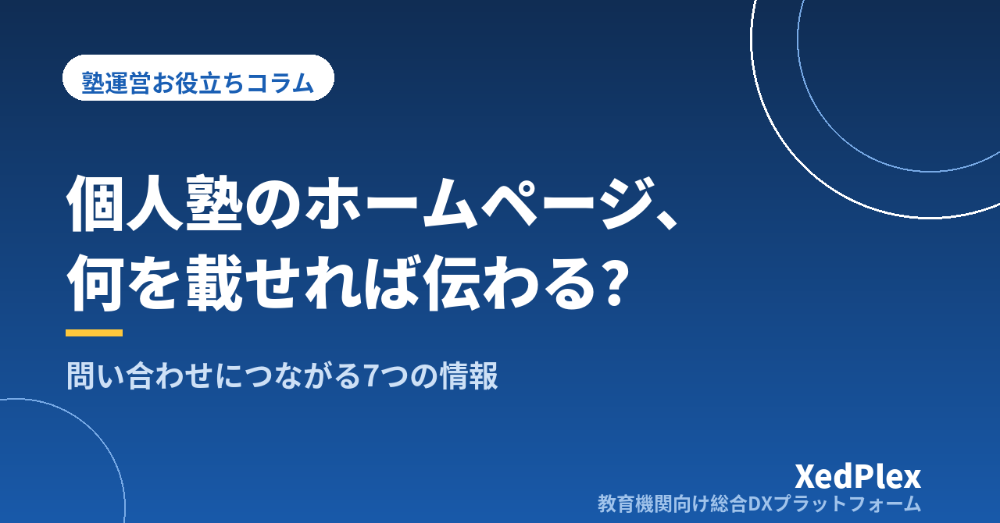

個人塾のホームページに載せるべき情報と載せなくていい情報｜問い合わせにつながる構成の作り方

「ホームページは一応あるけれど、そこから問い合わせが来たことはほとんどない」「開業時に作ったきりで、料金も時間割も古いまま」「制作会社の見積もりが高くて手が出ず、SNSと看板だけでやっている」──個人塾・小規模塾の塾長から、ホームページについてよく聞く悩みです。
ホームページで結果が出ない原因は、デザインの良し悪しよりも、保護者が知りたい順番で、知りたいことが書かれていないことにあります。逆に言えば、載せる情報と並び順を整理するだけで、個人塾のホームページは十分に働いてくれます。この記事では、保護者が確認したいこと、必ず載せたい7つの情報、後回しでいい情報、そして問い合わせ（体験申込）につながる構成と運用のコツを、塾運営の実務目線で整理します。
個人塾のホームページは「営業」ではなく「確認」のために見られる
まず押さえたいのは、保護者がホームページを見るタイミングです。大手のように広告で初めて存在を知ってもらうケースは少なく、個人塾の場合はチラシ・看板・知人の紹介・「地域名＋塾」の検索で名前を知った後に、「本当にここでいいか」を確かめるために見に来るのがほとんどです。
つまりホームページの役割は、派手に売り込むことではなく、保護者が抱えている次の3つの疑問に答えて、「一度話を聞いてみよう」と思ってもらうことです。
| 保護者の疑問 | 答えになる情報 |
|---|---|
| うちの子に合う塾か | 対象学年・指導形態・授業の様子・塾長の人柄 |
| 結局いくらかかるのか | 月謝と諸費用、通い方の例ごとの月額 |
| どうやって始めればいいのか | 問い合わせ手段・体験の流れ・入塾までのステップ |
この3つに答えられていないページは、どれだけ理念や実績を並べても「よく分からないから、他も見てみよう」で離脱されてしまいます。逆にこの3つが揃っていれば、写真やページ数が少なくても問い合わせにはつながります。
必ず載せたい7つの情報
上の3つの疑問を具体的な項目に落とすと、次の7つになります。ページを分ける必要はなく、トップページ1枚に収まっても構いません。
| 項目 | 保護者が知りたいこと | 書き方のコツ |
|---|---|---|
| 1. 対象学年・コース・指導形態 | 小学生は見てもらえるか、個別か集団か、定期テスト対策か受験か | 「小4〜中3、個別指導（講師1：生徒2）」のように1行で言い切る。対象外も明記すると無駄な問い合わせが減る |
| 2. 料金 | 月謝以外に何がかかるか、年間でいくらか | 後述。月謝・教材費・諸費用を分けて税込で書く |
| 3. 塾長・講師の顔と人柄 | 誰が教えるのか、子どもを任せて大丈夫か | 経歴の羅列より「なぜこの塾を開いたか」「どんな生徒に来てほしいか」を本人の言葉で。写真は1枚でよい |
| 4. 授業の流れと1週間の通い方 | 週何回、何時から何時まで、宿題はどのくらいか | 「中2・週2回」のモデルケースを時間割つきで示す |
| 5. 場所・アクセス・安全面 | 家から通えるか、夜道は大丈夫か、送迎できるか | 地図・最寄り駅や目印・駐輪と送迎車の停め方・入退室の通知の有無 |
| 6. 入塾までの流れ | 問い合わせたら何が起きるか、しつこく営業されないか | 「問い合わせ→面談・体験→入塾手続き」を3ステップで。体験の所要時間と費用（無料なら明記）も |
| 7. 問い合わせ手段 | いつ、どの方法で連絡すればいいか | 電話・フォーム・LINEなど複数を用意し、受付時間と返信の目安（例: 翌営業日まで）を書く |
料金は「載せない」より「載せて絞る」
もっとも迷うのが料金です。「近隣と比較されて損をする」「面談で説明したい」という理由で伏せる塾もありますが、個人塾にとっては載せるメリットのほうが大きいと考えます。理由は2つあります。
- 比較の土俵に乗れる：保護者は複数の塾を同時に見ています。料金が分からない塾は「たぶん高い」と推測されて候補から外れやすく、問い合わせの機会そのものを失います。
- 問い合わせの質が上がる：料金を見たうえで連絡してくる保護者は、予算面の合意がすでにあるため、体験から入塾に進みやすくなります。
書き方のポイントは、月謝だけでなく教材費・設備費・講習費などの諸費用を分けて、税込で明記することです。「諸費用を合わせたら想定より高かった」という不信感は、入塾後の退塾理由にもなります。おすすめは、「中2・週2回コースの場合、月謝○円＋教材費○円（年額）」のようなモデルケースを2〜3パターン示す方法です。全コースの料金表を載せる必要はありません。料金設計そのものを見直す際は、月謝管理・集金方法の記事もあわせてご覧ください。
載せなくていい・後回しでいい情報
大手塾のページを参考にすると、あれもこれも必要に見えてきます。しかし個人塾の規模では、次の情報は無理に載せなくても問い合わせに影響しません。むしろ、作る労力と更新の負担が塾長の時間を奪います。
| 後回しでいい情報 | 理由・代わりに載せるもの |
|---|---|
| 合格実績の一覧 | 人数が少ないと「少ない」という印象だけが残る。載せるなら年度と人数を正確に。代わりに「1人の生徒がどう変わったか」の短いストーリーを1つ |
| 長い教育理念 | 読まれない。理念は塾長紹介の中に3〜4行で溶かし込む |
| 講師全員の詳しい紹介 | アルバイト講師は入れ替わりがあり、更新が追いつかない。「塾長が全生徒の指導方針を決めている」など体制の説明で足りる |
| 頻繁に更新するブログ | 止まったブログは「もうやっていない塾」に見える。更新できる頻度（例: 講習前の年3回）だけ決める |
| SNSの埋め込み・写真ギャラリー | ページが重くなり、スマホで見づらくなる。写真は教室の全体・授業風景・塾長の3枚あれば十分 |
載せる情報を減らすもう1つの利点は、古くなる情報が減ることです。料金や時間割のように変わるものと、塾長の想いのように変わらないものを分け、変わるものは最小限にしておくと、年1回の見直しで済みます。
問い合わせにつながるトップページの並び順
情報が揃ったら、次は並び順です。保護者の多くはスマホで、しかも移動中や家事の合間に見ています。最初の1画面で「自分の子どもに関係がある塾か」が分からなければ、そこで閉じられます。おすすめの並び順は次のとおりです。
| 位置 | 載せるもの |
|---|---|
| 最初の1画面 | 塾名／対象学年と指導形態／地域名（「○○駅徒歩5分の個別指導塾」）／体験申込ボタン |
| 2画面目 | この塾が向いている生徒・保護者の悩み（「学校の授業についていけない」「部活と両立したい」など3つ） |
| 3画面目 | 授業の流れとモデルケースの時間割 |
| 4画面目 | 料金のモデルケース |
| 5画面目 | 塾長の紹介と写真 |
| 6画面目 | 入塾までの3ステップ／よくある質問（3〜5問） |
| 最後 | アクセス・受付時間／問い合わせ手段（電話・フォーム・LINE） |
あわせて、次の3点を確認してください。
- 問い合わせボタンは常に見える位置に：スマホの画面下に固定するか、各セクションの終わりに繰り返し置きます。「ページの一番下まで行かないと連絡先がない」構成は避けます。
- フォームの項目は最小限に：保護者名・学年・連絡先・希望の連絡方法の4つで十分です。志望校や現在の成績を必須にすると、入力の途中で離脱されます。
- ゴールは「入塾」ではなく「体験・面談の申込」：ホームページで入塾を決める保護者はいません。体験に来てもらうまでがホームページの仕事で、そこから先は体験授業から入塾への導線で受け止めます。
作ったあとに差がつく3つの運用
ホームページは公開して終わりではありません。問い合わせの数を左右するのは、むしろ公開後の運用です。
1. 変わる情報を年1回、決まった時期に見直す
料金・時間割・受付時間・講習の案内など、変わる情報は新年度前（2〜3月）に一度まとめて確認します。新年度準備のチェックリストに「ホームページの更新」を1行入れておくと忘れません。古い料金が載ったままだと、問い合わせの段階で「ホームページと違う」という不信感から始まってしまいます。
2. 「地域名＋塾」で見つかる入り口を整える
個人塾を探す保護者の多くは、地図アプリや検索で「○○市 塾」「○○駅 個別指導」と調べます。ホームページの見出しや本文に地域名・駅名を自然に入れ、Googleビジネスプロフィールなどの地図情報にもホームページのURLを登録しておくと、見つけてもらう入り口が増えます。また、在塾生の保護者からの紹介があったときも、紹介された側はまずホームページを確認します。紹介・口コミで生徒を増やす仕組みとホームページは、セットで効きます。
3. 問い合わせへの返信の速さと記録
せっかく問い合わせが来ても、返信が3日後では他の塾に決まっています。受付から24時間以内（できれば当日）に一次返信をするルールを決め、問い合わせの日時・経路（ホームページ・チラシ・紹介）・学年・その後の経過を1か所に記録しておきましょう。どの入り口から問い合わせが来ているかが分かると、ホームページのどこを直せばいいかも見えてきます。
- 最初の1画面に「対象学年・指導形態・地域名・申込ボタン」があるか
- 料金がモデルケースで、諸費用込み・税込で書かれているか
- 塾長の顔と「なぜこの塾を開いたか」が本人の言葉で書かれているか
- 問い合わせ手段が2つ以上あり、受付時間と返信の目安が書かれているか
- 料金・時間割が現在のものと一致しているか
まとめ
個人塾のホームページに必要なのは、豪華なデザインや大量のページではなく、「うちの子に合うか」「いくらかかるか」「どう始めるか」の3つに、保護者が知りたい順番で答えることです。対象・料金・人柄・通い方・場所・入塾の流れ・問い合わせ手段の7つを揃え、合格実績や長い理念、更新できないブログは後回しにする。トップページは最初の1画面で「関係がある塾か」を伝え、体験申込をゴールに据える。まずは今日、自塾のホームページをスマホで開き、上のチェック表の5項目を確認するところから始めてみてください。
この記事を書いた運営より
私たちは、個人経営・小規模の学習塾向けに、生徒管理・QRコードでの入退室記録・月次請求・保護者へのLINE/メール通知・AIによる学習支援までをひとつにまとめた教育機関向け総合DXプラットフォーム「XedPlex（ゼドプレックス）」を開発・提供しています。初期費用は0円、料金は生徒1名あたり月額300円（税込）から。生徒50名の塾なら月15,000円（税込）です。全国8つの教室で導入されており、導入塾には紹介ホームページの無料作成も行っています。機能の詳細説明はこちら。
XedPlexの詳細を見る